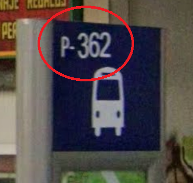

Encuentra dónde está el autobús introduciendo el número de la parada en la que te encuentras.
¿Cómo encuentro el número de mi parada?El número suele estar indicado en la parada, tal y como se muestra en la imagen.

Cargando el mapa...